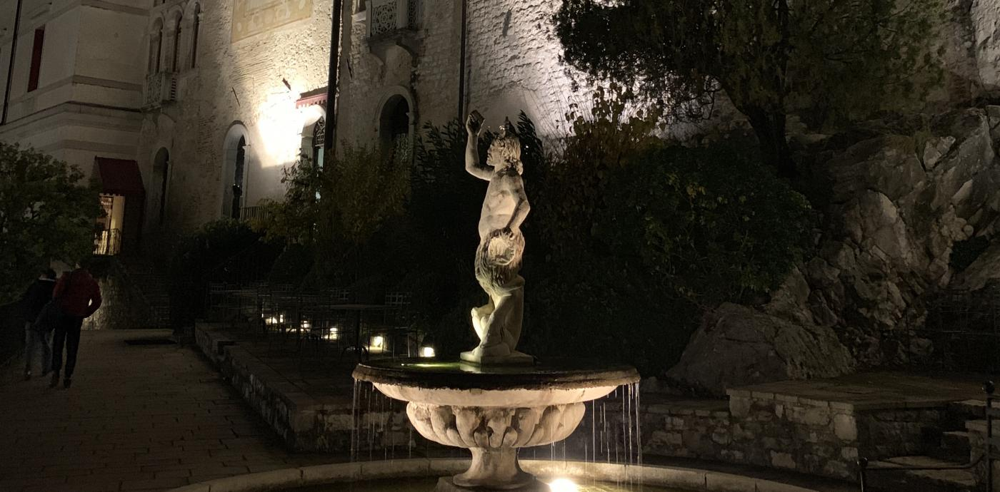
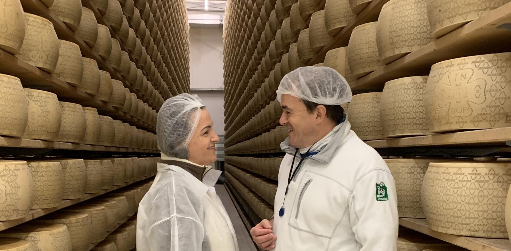
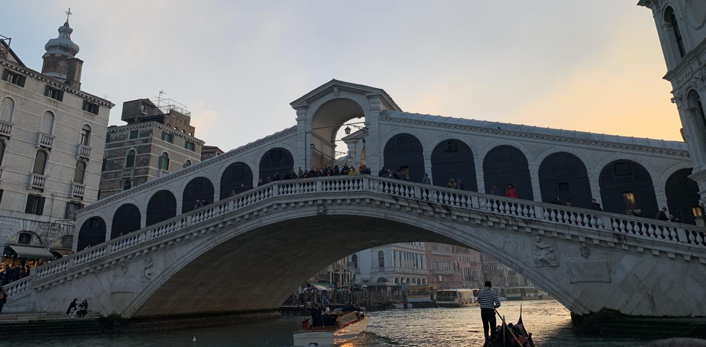
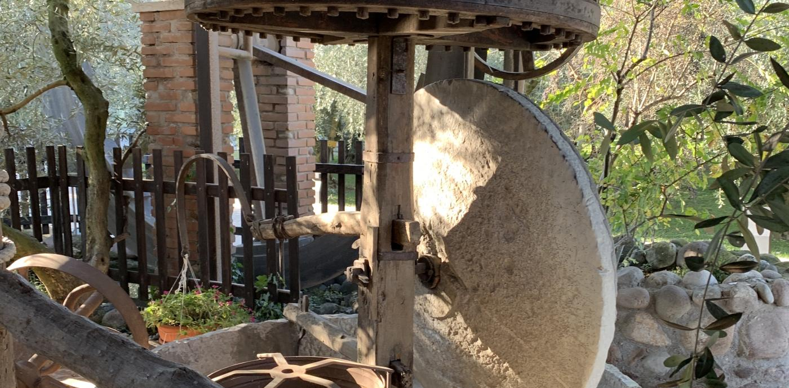
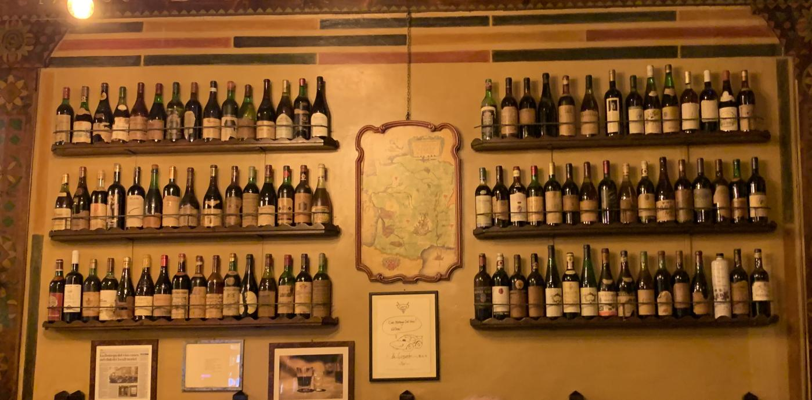
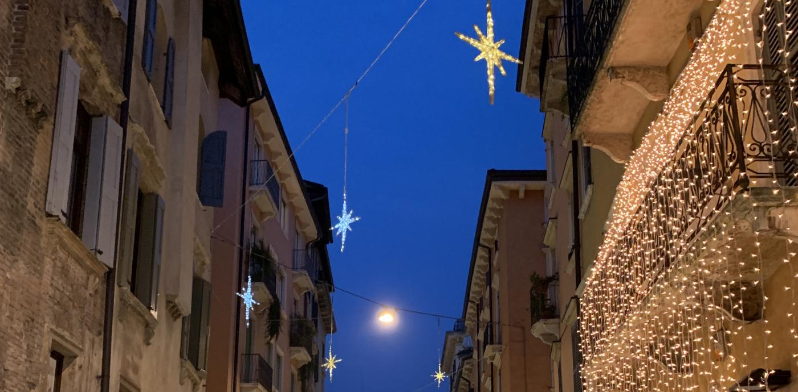

goodness
goodnessHome> Events
VENETO CULINARIA 2019
APRIL 28, 2019 TO MAY 05, 2019
NOTE: THIS TRIP HAS ALREADY TAKEN PLACE.
ON THIS TRIP, WE VISITED ITALY FOR A WEEK WITH ACCLAIMED CHEFS AS OUR TRAVEL COMPANIONS AND GUIDES!
Sunday, April 28: Benvenuto
 Arrival at Hotel Castelbrando, Cison di Valmarino, Italy.Welcome Session
Dinner, with a presentation of Torchiato, a sweet wine produced in the area, before dessert.
Monday, April 29: Cooking at Casagrande

Morning visit to Sorelle Bronca, Prosecco producer in Valdobbiadene, with a tasting and very light lunch.Return to Hotel Castelbrando for free time or a visit to the Castello. Take funicular down to village of Cison di Valmarino for cooking demo and dinner with Chefs Kevin O’Donnell and Michael Lombardi at Casagrande.
Tuesday, April 30: Formaggi
Morning visit up into the mountains to Monti Trentini, a traditional cheesemaker, for a tour and tutored tasting of local and regional cheeses. Followed by lunch.Free evening after return to Castelbrando.
Wednesday, May 1: Venice
Day in Venice – starting early with a panoramic boat tour.Guided visit to the heart of Venice and museum tour. Free time in Venice, for lunch on your own, shopping, or touring. Depart to Verona and check in at Due Torri Hotel. Pizza for dinner!
TThursday, May 2: Cooking and Verona

Guided tour of the must-see historical sites in Verona Free time in the afternoon for lunch, shopping, or a nap. Depart late afternoon for a hands-on cooking class and dinner with Chefs Michael and Kevin, held at a Verona cooking school.
Friday, May 3: Wine and Olive Oil
Morning visit to tour the Olio Salvagno olive oil producer. Visit to Speri winery in the Valpolicella Classica area for a tour, tasting, and lunch. Free evening in Verona for dinner out on the town or a quiet evening at the Due Torri hotel.
Saturday, May 4, 2019: Art
An art-focused tour of Verona.Free time to explore Verona, do last-minute shopping, or rest.Farewell Dinner at Ristorante Antica Torretta
Sunday, May 5, 2019
Departures